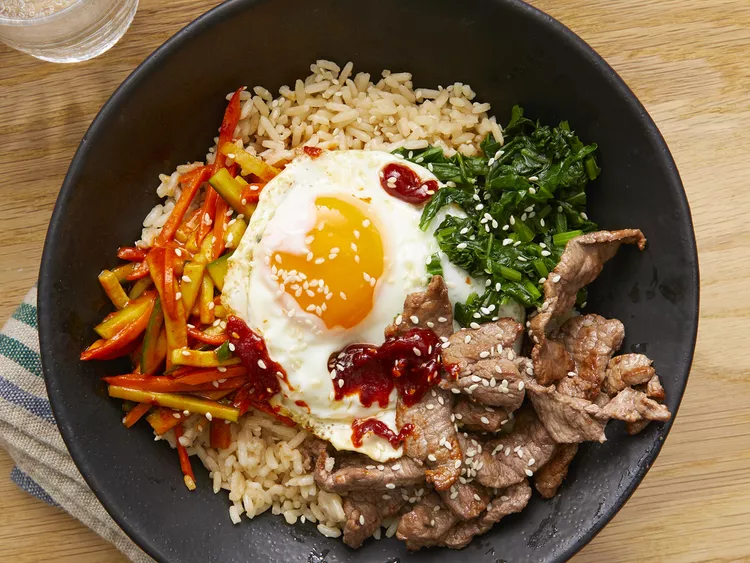

🍜 Bibimbap

Description :
This bibimbap recipe makes a popular and delicious Korean meal.
Meaning mixed rice, bibimbap is a delicious rice bowl topped with vegetables,
beef, a whole egg, and gochujang (red chili pepper paste).
Ingredients :
- 1 English cucumber, cut into matchsticks
- ¼ cup gochujang (Korean hot pepper paste) (Optional)
- 1 bunch fresh spinach, cut into thin strips
- 1 tablespoon soy sauce
- 2 teaspoons olive oil, divided
- 2 carrots, cut into matchsticks
- 1 clove garlic, minced
- 1 pinch red pepper flakes
- 1 pound thinly-sliced beef top round steak
- 4 large eggs
- 4 cups cooked white rice
- 4 teaspoons toasted sesame oil, divided
- 1 teaspoon sesame seeds
- 2 teaspoons gochujang (Korean hot pepper paste), divided (Optional)
Steps :
-
Stir together cucumber pieces and gochujang paste in a bowl.
-
Bring about 2 cups water to a boil in a large nonstick skillet
and stir in spinach; cook until bright green and wilted, 2 to 3 minutes.
-
Drain spinach and squeeze out as much moisture as possible;
set spinach aside in a bowl and stir in soy sauce.
-
Heat 1 teaspoon olive oil in a large nonstick skillet;
cook and stir carrots until softened, about 3 minutes.
-
Stir in garlic and cook just until fragrant, about 1 minute.
Stir in cucumber mixture; sprinkle with red pepper flakes.
Set carrot mixture aside in a bowl.
-
Brown beef in a clean nonstick skillet over medium heat,
about 5 minutes per side; set aside.
-
Heat remaining 1 teaspoon olive oil in another nonstick skillet
over medium-low heat. Fry eggs just on one side until yolks are runny,
but whites are firm, 2 to 4 minutes.
-
Divide cooked rice into 4 large serving bowls; top with spinach mixture,
a few pieces of beef, and cucumber mixture. Place 1 egg atop each serving.
Drizzle each bowl with 1 teaspoon sesame oil, a sprinkle of sesame seeds,
and a small amount of gochujang paste if desired.